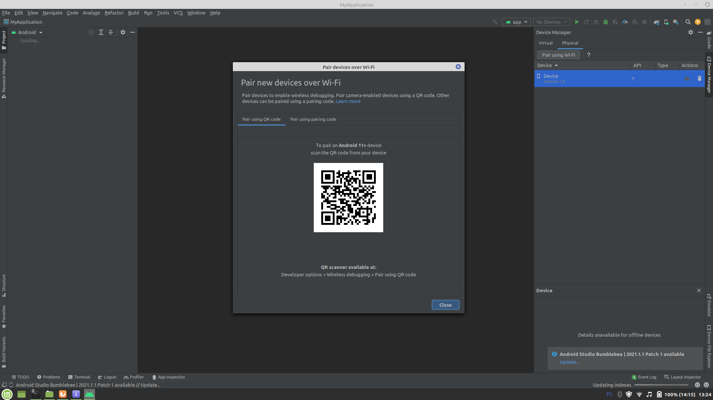

Dart and Flutter ‐ What CY had done in the Second Week of February 2022
This is a highly personalized post.
Why I did this...
What I Downloaded
Linked Devices
Commandline-Oriented Framework Configuration
Essential Dart ‐ Need an Update
Summary(I)
Summary(II)
Suggestion
External Links and Resources
Dash ‐ the mascot
for the Dart language
and
the Flutter framework
Why I did this...
Being over-ambitious, I had tried to help a YouTuber and her team realize their goal of a production of a mobile app.
I thought the Flutter framework works like Java frameworks, that is: once a programmer finished the coding, there were two virtual machines coded for iOS and Android OS respectively, so that how the App looks and works is consistent.
I was wrong. From my understanding, programmers need to compile for iOS and for Android OS (and for web broswer) under the Flutter framework. Like you write a C++ code, you should compile it for Windows and Linux respectively if you want the program available for both OS.
Anyway, I would like to record the installation process and the minimum testing for future reference.
What I Downloaded
It turns out that Flutter framework is quite huge for my laptop. I needed to install several Google products: Google Chrome (must have; around 290 MB), Android SDK(11.3 GB), Android Studio(1.9 GB), Flutter(1.9 GB) and Android SDK Platform-Tools(35 MB) (its significance will explain later within this blogpost). The latter four cost 15.1 GB in total.
Logo of Flutter
Linked Devices
I did not have an iPhone on hand, but my smartphone is from Samsung, i.e. I have a physical device of Android OS for testing. Originally I did not want to use my phone for testing, but...
Each virtual device costs around 500 MB. The most ridiculous thing was that every time the Android Studio created a virtual device and I tried to run the emulator, a message "The emulator process for [virtual device name] has terminated." popped. I searched online but could not find a solution. After some while, I decided to use my smartphone for testing. (screenshot 1) (screenshot 2)
{kind=link}
{kind=link}
{kind=link}
For most resources I had searched, they suggested a USB line was needed to connect the physical device to the computer. But I had found that it is possible to connect the physical device to the computer completely via WiFi.
The process was also uneasy. I encountered a message "adb server version ([number]) doesn't match this client ([number])". Luckily I found a possible solution (on GitHub) via searching.
And I would like to add that before the Android smartphone becoming a physical device for developing, we have to enable the "developer option". The way to enable this option is quite funny ‐ "tap the Build Number option 7 times". See the official document.
Commandline-Oriented Framework Configuration
This section follows the official document. They (I)(II) are great.
msg...
$ flutter devices
msg...
$ cd the_working_directory $ flutter create myapp
msg...
$ cd myapp
$ flutter run
Launching lib/main.dart on SM A515F in debug mode... Running Gradle task 'assembleDebug'... 38.2s ✓ Built build/app/outputs/flutter-apk/app-debug.apk. Installing build/app/outputs/flutter-apk/app.apk... 625.7s Syncing files to device SM A515F... 350ms Flutter run key commands. r Hot reload. 🔥🔥🔥 R Hot restart. h List all available interactive commands. d Detach (terminate "flutter run" but leave application running). c Clear the screen q Quit (terminate the application on the device). 💪 Running with sound null safety 💪 more msg related to the debugger and profiler for the testing device... Application finished.
Essential Dart ‐ Need an Update
Logo of Dart
I tried to get a free programming book, therefore I visited the List of Free Learning Resources In Many Languages page. There were two books listed, and I started with Essential Dart. However, the book needs an update.
At this moment, I just pick what in the "Getting started with Dart" section.
Hello World
$ dart hello_world.dart
This runs smoothly.
Web App from Dart
To build the App, run on the terminal
$ dart create -t web-simple cat_display $ cd cat_display
Change the content of index.html into
<img id="cats"></img>
Change the content of main.dart into
import 'dart:html';
/// Stores the image in [blob] in the [ImageElement] of the given [selector].
void setImage(selector, blob) {
FileReader reader = new FileReader();
reader.onLoad.listen((fe) {
ImageElement image = document.querySelector(selector) as ImageElement;
image.src = reader.result as String;
});
reader.readAsDataUrl(blob);
}
main() async {
var url = "https://upload.wikimedia.org/wikipedia/commons/2/28/Tortoiseshell_she-cat.JPG";
// Initiates a request and asynchronously waits for the result.
var request = await HttpRequest.request(url, responseType: 'blob');
var blob = request.response;
setImage("#cats", blob);
}
Then:
$ dart pub global activate webdev
Then run
$ webdev serve
or
$ webdev serve web:[port number] #ref
Check http://localhost:[port number]/ on the browser then.
To kill the process:$ ps -e | grep dart _________PID_ pts/1 00:00:00 dart:webdev.dar _another_PID_ ? 00:00:05 dart:build_runn $ kill -9 [list of PIDs of related processes]
Getters and Setters of Dart
void main() {
var cat = new Cat();
print("Is cat hungry? ${cat.isHungry}"); // Is cat hungry? true
print("Is cat cuddly? ${cat.isCuddly}"); // Is cat cuddly? false
print("Feed cat.");
cat.isHungry = false;
print("Is cat hungry? ${cat.isHungry}"); // Is cat hungry? false
print("Is cat cuddly? ${cat.isCuddly}"); // Is cat cuddly? true
}
class Cat {
bool _isHungry = true;
bool get isCuddly => !_isHungry;
bool get isHungry => _isHungry;
void set isHungry(bool hungry) => this._isHungry = hungry;
}
Then run
$ dart getters_and_setters.dart
Summary(I) - Mobile Apps Development
It spends more time than what I thought. I am unsure that I can finish the basic learning by the end of this year.
Summary(II) - Infrastructures...
Maybe look on YouTube videos before I install a framework...
Suggestion - on Learning Dart...
As long as there are no good free books for Dart, I think one may study the Java language before diving into Dart. □
External Links and Resources
- A simplified introduction to Dart and Flutter, by Sameeha Rahman (2019 March)
- Twitter: Flutter Developer (active)
- 22 Short Lessons To Become A Mobile Programmer Using Flutter Framework, by Zaiste, (Posted: 2019 Nov; Updated: 2020 Jul)
Except from images and codes from other personnels, the content of this blogpost is released under a copyleft spirit. One may share (full or partial) content of this blogpost on other platforms if you share it under the free and open content spirit.
Contact on twitter: @e7_87.
Discuss via GitHub issues: here.
Email: fungcheokyin at gmail.com
Created Date: 13th February, 2022.